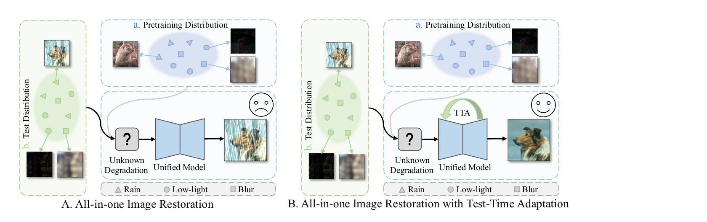
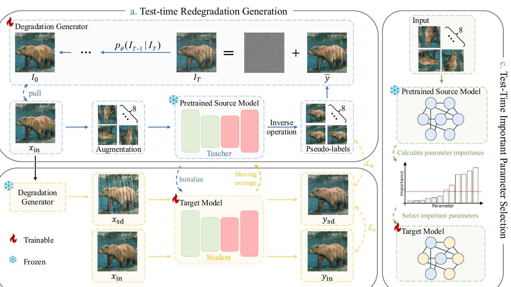
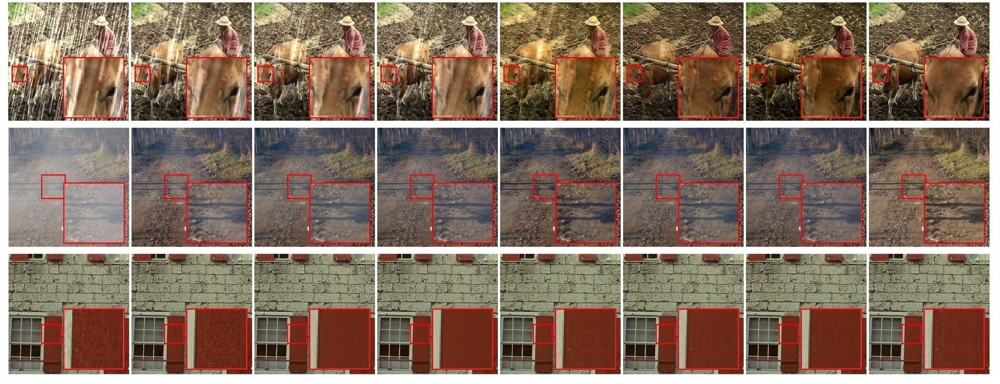
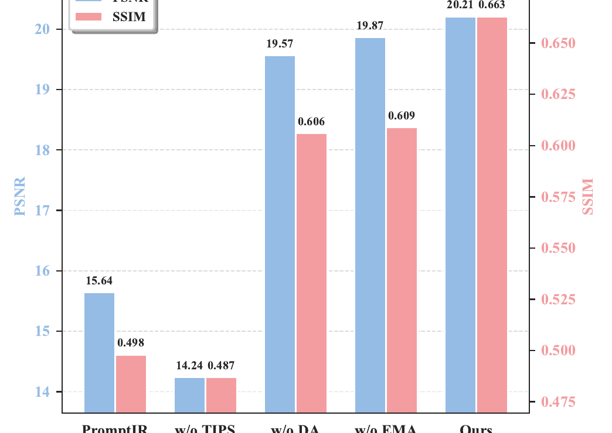
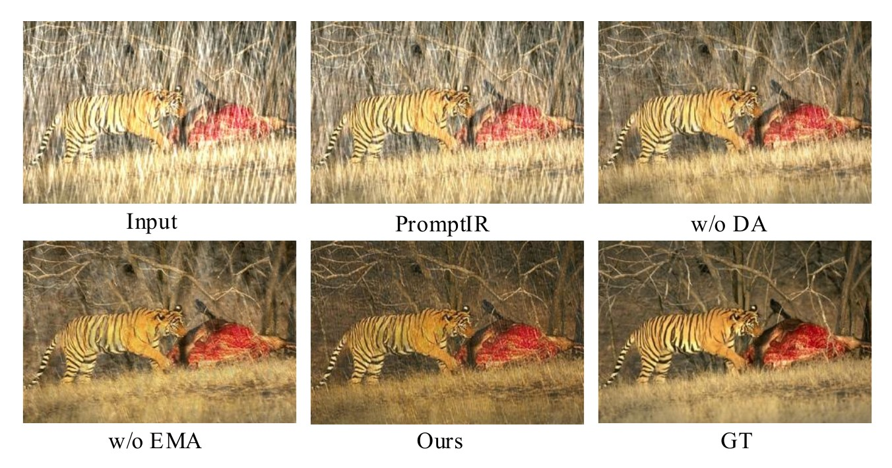
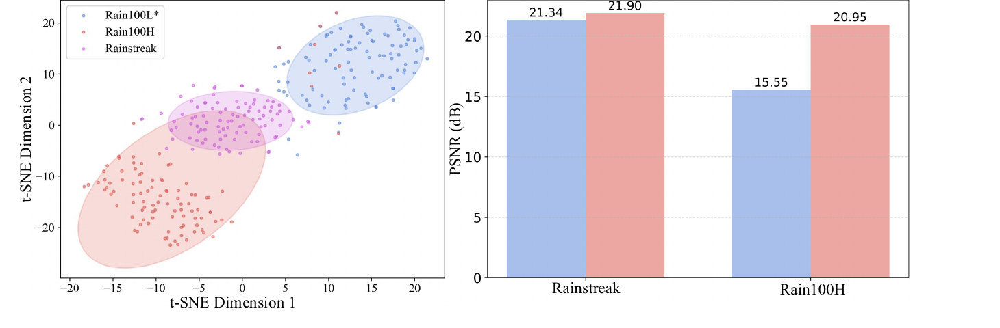
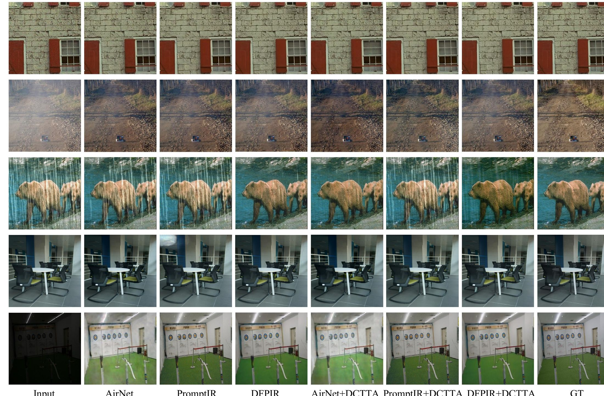

CVPR 2026 · ALL-IN-ONE IMAGE RESTORATION / TEST-TIME ADAPTATION
退化一致的测试时适配：让全合一复原模型自己适应陌生的退化
Degradation-Consistent Test-Time Adaptation for All-in-One Image Restoration
一个在固定退化集合上训练好的「全合一」模型，遇到训练分布之外的雨、雾、噪声就会掉点。这篇文章不去重训、也不需要原始训练数据：它用扩散模型在测试时把当前退化「再造一遍」，让原图与再退化图的一对输出彼此一致，以此为自监督信号只更新对退化最敏感的那部分参数。
- 原文
- CVF 开放版 PDF（正文 10 页）+ 补充材料 PDF（4 页）
- 会议
- CVPR 2026（录用，CVF Open Access）
- 规模
- 正文 5 节 + 补充 3 节 · 18 公式 · 7 图 · 12 表 · 64 条文献
本页据 CVPR 2026 开放获取版本（CVF Open Access，正文页 15476–15485）与随附补充材料逐段对照翻译。检索 arXiv 未发现同名或同作者的预印本（该作者名下已公开的是 DOD、UniLDiff 等工作），因此没有 LaTeX 源码可用：公式据 PDF 排版还原，表格数字据 PDF 逐格录入并与正文引用核对。原文 PDF 带 CVF 水印，图片裁自该 PDF，只翻译图中与图注文字，不重绘任何曲线与样例。所有额外讲解均标为「译者注」，与原文分开。
读之前，先把这几条线分清
这一段是译者注，不是原文。它只做一件事：让你读到公式 (1)–(14) 时，知道每个符号在整条流水线里的位置。
- 全合一复原（AiOIR）：一个网络、一套参数同时处理去噪、去雨、去雾、去模糊、暗光增强等任务。训练集里的退化类型与强度是固定的，所以模型实际上只认识一个「退化闭集」。
- 测试时适配（TTA）的边界：只能看到目标域的退化输入，看不到干净标签，也拿不到源域训练数据。能改的只有模型参数（或其中一部分），不能重训、不能改结构。
- 师生结构：教师 fξ 是冻结来源域知识的参照物，负责造伪标签；学生 fθ 才是被适配、被更新的那个。教师在适配过程中用指数滑动平均（EMA）跟着学生走，见公式 (11)。
- 再退化（redegradation）：先让学生／教师给出一个复原结果 ȳ，再用扩散模型把这个结果「破坏回」当前测试集的退化样子，得到 xsd。于是 xin 与 xsd 被视作同一场景、同一退化的两次实现。
- 一致性为什么算监督：如果模型真的只依赖「退化 + 场景」这两件事，那么同一场景的两种退化实现应当复原到同一张干净图。输出之间的差异就是可用的自监督残差，不需要 GT。
- 参数重要性：对每个参数算测试损失梯度的平方（Fisher 的对角近似），把最重要的前 ρ 比例参数冻结，只更新其余部分，避免把源域能力一次性改写掉。
术语速查（译者注）
- AiOIR
- All-in-One Image Restoration，全合一图像复原。本文的受试骨干是 AirNet、PromptIR、DFPIR。
- TTA
- Test-Time Adaptation，测试时适配。本文是「源数据不可见、标签不可见」的在线适配，且每个目标域只做一次性更新。
- RDDM
- Residual Denoising Diffusion Model。与只加高斯噪声的扩散不同，它把「干净图减退化图」的残差也写进前向过程，因此适合当退化生成器。
- 伪标签
- 本文指教师网络对八种几何增广的平均输出，见公式 (1)。它是后面所有一致性损失的目标。
- Fisher 信息矩阵
- 参数重要性的经典度量。本文用其对角近似，只保留梯度平方的均值，见公式 (13)。
- PSNR / SSIM
- 像素保真度与结构相似度，越大越好。本文全部表格都按 PSNR↑ / SSIM↑ 排序。
摘要
English original
全合一图像复原（AiOIR）方法在处理多样退化方面已取得显著进展。然而，当测试分布偏离训练分布时，它们的性能往往变差。因此，为 AiOIR 探索测试时适配至关重要。为了在不访问源数据、也不重新训练的前提下，把预训练的 AiOIR 模型适配到未见过的退化分布，必须解决两个关键难题：设计可靠的伪监督，以及稳定适配过程。我们观察到，同一场景的多个退化版本应当映射到一致的干净图像，据此提出退化一致的测试时适配（DCTTA）。DCTTA 包含三个核心组件：(1) 测试时再退化生成，利用基于扩散的生成器构造伪「退化–干净」图像对，以实现分布对齐；(2) 退化引导的图像复原，通过自监督一致性损失强制域适配；(3) 测试时重要参数选择，只选择性地更新对退化敏感的参数，从而在保持预训练知识的同时确保适配稳定。在多个任务与具有挑战性的域偏移上的大量实验表明，DCTTA 持续优于最先进的 AiOIR 基线，在 Rain100H 数据集上取得最高 +4.57 dB 的 PSNR 提升。代码已公开于：https://github.com/tonia86/DCTTA。
English original
常规全合一复原与本文测试时适配框架的对比

1 引言
English original
全合一图像复原（AiOIR）已成为低层视觉中一个有前景的方向。它旨在单个统一框架内处理多种退化类型（例如去噪、去雾、去雨）。与需要为每种退化类型单独建网的传统任务专用方法 [23]、[24]、[39]、[48] 不同，AiOIR 具有更强的灵活性与泛化能力，在各类复原任务上取得了显著进展 [6]、[14]、[43]。
English original
依据退化信息是否已知，现有 AiOIR 方法大致可分为非盲与盲两类。非盲 AiOIR 假设已知退化类型的先验知识，并将其显式引入以引导复原过程 [8]、[11]、[37]。相反，盲 AiOIR [1]、[18]、[30] 在没有任何退化先验的情况下运行，要求模型同时推断退化并恢复干净图像。这两类方法都已取得大幅改进。
English original
然而，大多数现有 AiOIR 方法隐含地假设了一个闭集场景，即训练与测试中的退化分布一致。当测试时的退化分布偏离训练中所见时，无论盲方法还是非盲方法都会出现显著性能下降，如图 1(A) 所示，这暴露出它们泛化能力上的根本局限。
English original
为解决这一问题，我们为 AiOIR 探索测试时适配（TTA）（图 1B）。其目标是让现有 AiOIR 模型在测试阶段快速适应目标域，从而提升其在未见测试数据上的表现。尽管 TTA 在图像分类 [19]、[20] 与语义分割 [22] 等任务上已展现出有希望的结果，将其扩展到 AiOIR 场景仍面临两大挑战：(1) 缺乏可靠的监督：复原是像素级回归任务，很难从未标注的目标图像中生成准确的自监督信号，在复杂或未见的退化下尤其如此。(2) 破坏预训练能力的风险：在线参数更新可能覆盖源域知识或引入伪影，导致复原结果不稳定或变差。
English original
为克服这些挑战，我们提出退化一致的测试时适配（DCTTA）——一个为 AiOIR 量身定制的新框架。DCTTA 的核心思想是：通过再退化生成与退化引导的图像复原构造自监督训练对，从而在无标签监督下完成适配，同时只选择性地更新对退化敏感的参数以保持稳定。具体而言，DCTTA 由三个核心组件构成：(1) 测试时再退化生成模拟退化过程，为自监督学习构造「退化–再退化」图像对；(2) 退化引导的图像复原强制这类图像对的复原输出彼此一致，以实现无监督域适配；(3) 测试时重要参数选择识别并只更新对退化最敏感的参数，以保证在线优化过程中的稳定性。在多个基准数据集与 AiOIR 骨干上的大量实验表明，DCTTA 在具有挑战性的域偏移下持续提升复原性能，验证了其在复杂真实场景中的鲁棒性。
English original
我们的主要贡献总结如下：
- 我们提出 DCTTA，一个面向 AiOIR 的新测试时适配框架。据我们所知，这是首个专为 AiOIR 设计的无源域适配方法。
- 我们设计了一个集成测试时再退化生成、退化引导的图像复原与测试时重要参数选择的框架，能在保持模型复原能力的同时，高效有效地适应未知退化。
- 在多个基准数据集与骨干上的大量实验表明，DCTTA 在未见过的退化分布下显著提升复原性能。
English original
• We propose DCTTA, a novel test-time adaptation framework for AiOIR. To the best of our knowledge, this is the first source-free domain adaptation approach designed specifically for AiOIR.
• We design a framework that integrates test-time redegrada-tion generation, degradation-guided image restoration, and test-time important parameter selection, enabling ef-ficient and effective adaptation to unknown degradations while preserving the model’s restoration capacity.
• Extensive experiments on multiple benchmark datasets and backbones demonstrate that DCTTA significantly im-proves restoration performance under unseen degradation distributions.
2 相关工作
English original
2.1 全合一图像复原
English original
AiOIR 旨在建立一个共享参数的统一框架，能在单个模型中处理多种类型的图像退化。为增强在复杂多变的退化条件下的适应性，研究者探索了多种架构设计 [14]、[36]、[38] 与训练策略，包括对比学习 [35]、持续学习 [16] 与多任务学习 [43]。此外，来自其他领域的先进概念，例如提示学习 [44]、专家混合机制 [7]，也被引入以进一步提升模型性能与泛化能力。尽管有这些进展，大多数现有方法仍是在预定义的退化集合上训练的，遇到未见过的或分布外的退化时会出现显著性能下降。这一局限在真实场景中尤为关键，因为那里的退化往往复杂、多样且难以事先建模 [2]。
English original
为应对这一挑战，我们提出一个通用的自适应框架，能在跨数据集与跨分布的设置下显著提升模型鲁棒性，从而把图像复原的适用范围扩展到真实世界中未见过的场景。
English original
2.2 测试时适配
English original
TTA 在高层视觉任务上进展迅速，包括图像分类与 2D/3D 语义分割。MM-TTA [33] 聚焦 3D 语义分割，引入跨模态与模态内的伪标签机制，在多模态输入下实现稳定适配。CoTTA [40] 通过加权伪标签与随机参数复原处理图像分类中的持续域偏移，从而在无源数据条件下实现长期适配。TSTTA [29] 面向动态真实场景中的 2D 语义分割，采用归一化替换与熵正则化来提升模型稳定性与鲁棒性。
English original
相比之下，面向 AiOIR 的 TTA 研究仍相对有限。TAO [13] 将预训练扩散模型与可学习适配器结合，以实现对未见退化的动态适应，并通过梯度引导的扩散生成完成零样本图像复原。与在推理阶段依赖扩散模型的 TAO 不同，我们的方法把扩散模型用作退化生成器，并通过退化一致性完成测试时域适配，推理阶段不需要扩散模型。此外，我们的方法与骨干无关，能有效地把现有 AiOIR 模型适配到目标域的测试分布。
English original
3 方法
English original
3.1 总体流程
English original
如图 2 所示，我们提出 DCTTA 框架，它建立在师生架构之上。预训练的源域模型 fξ 作为教师，待适配到目标域的模型 fθ 作为学生。框架由三个关键组件组成：测试时再退化生成（TRG）、退化引导的图像复原（DIR）与测试时重要参数选择（TIPS）。
English original
对于一张退化测试输入 xin，它首先被送入 TRG 组件，由退化生成器学习并模拟图像退化过程。在 DIR 阶段，生成器产出再退化图像 xsd，它与原始退化输入一起构成「退化–再退化」图像对。这些图像对随后被用于一种自监督学习策略，以自适应地微调学生网络，使其更好地适应当前退化分布。为保持模型稳定性、防止灾难性遗忘，我们进一步引入 TIPS 策略，它只更新对退化敏感的参数子集，其余预训练权重保持固定。
English original
DCTTA 总览：再退化生成、退化引导复原与重要参数选择

3.2 测试时再退化生成
English original
为有效建模新测试数据集的退化表示，我们提出测试时再退化生成策略（如图 2(a) 所示）。该做法首先使用一个预训练的 AiOIR 模型（例如 [18]、[30]）生成伪标签；然后训练一个退化生成器来学习退化过程，产出更符合当前分布的再退化图像。
English original
数据增广（DA）。为提升伪标签的鲁棒性，我们对退化输入图像 xin 施加八种几何增广（随机 90° 旋转与翻转）。增广后的图像送入教师模型 fξ，输出再经逆变换还原。最终伪标签 ȳ 由全部增广预测取平均得到：
English original
其中 Ai ∈ {Aj}8j=1 表示作用于 xin 的第 i 种几何增广，Ri 为相应的逆变换。
English original
退化生成器（DG）。我们引入一个退化生成器，用来建模从初始复原结果 ȳ 到退化图像 xin 之间的分布差异。借助扩散模型强大的生成能力，我们采用 RDDM [21] 作为退化生成器。训练时，扩散模型 Iθres 通过最小化如下目标进行优化：
English original
其中残差 Ires 定义为伪标签 ȳ 与退化输入 xin 之差（即 Ires = ȳ − xin），zt 是由 ȳ 与 xin 合成的中间变量。更详细的推导请参见补充材料。
English original
退化生成器训练完成后，我们即可构造「退化–再退化」（伪「退化–干净」）图像对，并用它们微调预训练的源模型。
English original
3.3 退化引导的图像复原
English original
受「干净一致性」性质 [10] 的启发，该性质认为：一组退化程度不同、但描绘同一底层场景的退化图像，应当对应同一张潜在干净图像。基于这一假设，我们利用第一步训练好的退化生成器合成再退化图像 xsd。原始退化图像 xin 与其再退化对应物 xsd 都被送入学生网络 fθ，得到两个复原输出：
English original
其中 yin 与 ysd 分别表示原始输入与再退化输入所对应的预测。
English original
为引导学生网络在退化输入上获得更好的泛化，我们提出自监督适配与适配一致性相结合的策略，促进知识从预训练教师向新的退化测试域迁移（如图 2(b) 所示）。
English original
自监督适配。鉴于 xin 与 xsd 表示同一场景，它们的复原输出应保持一致。因此我们定义逐像素一致性损失：
English original
其中 ‖·‖1 表示 ℓ1 范数，用以强制两个输出之间的空间一致性。
English original
为进一步对齐感知语义，我们引入一个在 VGG 网络 [34] 中间层特征上计算的感知损失：
English original
其中 φl(·) 表示 VGG 第 l 层的特征。
English original
因此，总的自监督适配损失可写为：
English original
其中 λcons 与 λper 是正则化系数，用于平衡逐像素一致性损失与感知特征损失的贡献。
English original
适配一致性。为保持适配后的学生模型与预训练教师模型之间的一致，我们鼓励适配后的输出 ysd 向教师预测的伪标签 ȳ 对齐。适配一致性损失定义为：
English original
其中 Laper 表示前面定义的感知损失，Lacons 是本阶段引入的一个修改版一致性损失。
English original
译者注：公式 (9) 中的系数在原文印作 λcos，而公式 (6) 用的是 λcons；结合上下文与补充材料「Other weights λ are used only to align loss scales」的说明，这里应是同一符号的排版笔误。本页照原文保留 λcos，不改动。
最终目标。最终损失整合自监督适配损失与适配一致性损失：
English original
其中 α 是正则化系数。
English original
除了用上述目标函数优化学生网络 fθ，我们进一步更新教师网络 fξ，以提升伪标签的准确性并促进学生与教师之间的相互学习。具体而言，教师的参数 ξ 在每一步训练中通过学生参数 θ 的指数滑动平均（EMA）更新：
English original
其中 η ∈ [0, 1] 是衰减率，控制教师模型的更新速度。
English original
3.4 测试时重要参数选择
English original
尽管测试样本的退化特性可能与训练中所见不同，但它们仍属于同一类复原任务。为此，我们采用 TIPS 策略（如图 2(c) 所示），在适配过程中选择性地保留关键模型参数。TIPS 的核心思想是识别并保留对模型预训练知识必不可少的参数，从而在适配目标分布的同时稳定源域上的性能。
English original
为估计参数重要性，我们基于增广一致性损失 Lc 的梯度，计算 Fisher 信息矩阵 [15]、[28] 的对角近似。具体而言，对给定输入 xin，该损失定义为：
English original
其中 ϵ 是用于数值稳定的小常数。
English original
接下来，每个参数 θi 的重要性以其损失梯度平方在测试数据集 D 上的平均来估计：
English original
基于重要性分数 ω(θi)，我们通过选取前 ρ 比例保留一组最关键参数。这些参数在适配过程中被冻结，以保存预训练知识。被选中的参数集合 S 定义为：
English original
其中 τρ 是 ω(θi) 前 ρ 百分位所对应的阈值，ρ ∈ [0, 1] 是控制保留比例的超参数。实验中我们默认设 ρ 为 0.4。值得注意的是，重要参数集合 S 的选取只在 TTA 开始前执行一次，从而保证在线推理阶段的计算效率。
English original
译者注：原文用词是「保留前 ρ 比例」并「冻结」这部分参数，因此实际参与更新的是其余 (1−ρ) 比例的参数。ρ = 0.4 意味着约 40% 的敏感参数被冻结、其余照常适配 —— 这与直觉上「只更新最重要的参数」正好相反，读到公式 (14) 时容易弄反。
4 实验
English original
4.1 实验设置
English original
数据集与指标。为在现有 AiOIR 方法中验证所提 DCTTA 的有效性，我们在两种典型的 AiOIR 设置下开展实验。在三任务设置中，退化类型包括雨、雾与噪声，配置沿用 PromptIR [30]。具体而言，去噪使用 BSD400 [5] 与 WED [26] 作为训练数据集，并加入 σ = 15、25、50 的高斯噪声；去雨使用 Rain100L [45]；去雾使用 RESIDE [17]（OTS 子集）。五任务设置在三个任务的基础上增加了去模糊与暗光增强，配置沿用 IDR [49]。这两项新增任务的训练数据集分别是 GoPro [27]（去模糊）与 LOL [42]（暗光增强）。
English original
为评估模型在与训练数据分布不同的图像上的泛化能力，我们采用一组更具挑战性的测试数据集，包括：去噪用的 Kodak24 [12]（加入泊松噪声）；去雾用的 O-HAZY [3] 与 DenseHaze [4]（真实世界）；去雨用的 Rain100H；去模糊用的 RealBlur [32]；以及暗光增强用的 LOLv2-real [46]（真实世界）。
English original
定量评价采用 PSNR 与 SSIM [41] 作为指标，数值越高表示复原性能越好。更多定量结果见补充材料。
English original
实现细节。全部实验在 NVIDIA GeForce RTX 3090 GPU 上使用 PyTorch 框架完成。我们选择 AirNet [18]、PromptIR [30] 与 DFPIR [37] 作为用于测试时适配的预训练 AiOIR 模型，所提方法也可方便地应用于其他可用的预训练模型。模型使用 Adam 优化器训练，固定学习率 2 × 10−4，(β1, β2) = (0.9, 0.999)，批大小为 1。总损失函数中的超参数按经验设定为：λcons = 1，λper = 0.01，α = 1，指数滑动平均衰减 η = 0.95。所有实验中 RDDM 的采样步数设为 5。
English original
4.2 实验结果
English original
4.2.1 设置 1：三类退化任务
English original
如表 1 所示，我们在所提 DCTTA 框架与若干代表性 AiOIR 方法之间进行了系统比较，包括 AirNet、PromptIR 与 DFPIR，同时把 AdaIR [9]、VLU-Net [47] 与 DACLIP [25] 作为补充基线参照。总体来看，DCTTA 在所有基线模型上都带来稳定而显著的性能增益，并在每个数据集上取得最佳结果。其中 PromptIR+DCTTA 表现最为突出，PSNR 平均 18.61 dB、SSIM 平均 0.654。值得注意的是，提升在去雨任务上最为明显（PSNR 提升约 2.7∼4.5 dB），说明 DCTTA 能有效适应具有强空间结构的复杂退化，例如雨痕。相比之下，去噪与去雾的提升更为温和，因为它们的退化在空间上均匀、统计上同质。
English original
| 方法 | 去噪 | 去雾 | 去雾 | 去雨 | 平均 | |||||
|---|---|---|---|---|---|---|---|---|---|---|
| Kodak24 | O-HAZY | DenseHaze | Rain100H | — | ||||||
| PSNR↑ | SSIM↑ | PSNR↑ | SSIM↑ | PSNR↑ | SSIM↑ | PSNR↑ | SSIM↑ | PSNR↑ | SSIM↑ | |
| AdaIR | 25.43 | 0.868 | 16.54 | 0.709 | 11.65 | 0.388 | 15.79 | 0.492 | 17.35 | 0.614 |
| VLU-Net | 25.22 | 0.864 | 16.61 | 0.714 | 11.63 | 0.386 | 15.55 | 0.483 | 17.25 | 0.612 |
| DACLIP | 24.65 | 0.839 | 16.61 | 0.714 | 11.11 | 0.348 | 15.37 | 0.493 | 16.93 | 0.599 |
| AirNet | 25.57 | 0.862 | 16.70 | 0.713 | 10.90 | 0.360 | 14.62 | 0.490 | 16.95 | 0.606 |
| AirNet* | 25.71 | 0.863 | 16.71 | 0.713 | 10.91 | 0.361 | 15.14 | 0.515 | 17.12 | 0.613 |
| AirNet+DCTTA | 25.79 | 0.863 | 16.95 | 0.723 | 12.49 | 0.377 | 17.34 | 0.531 | 18.14 | 0.623 |
| PromptIR | 25.41 | 0.859 | 16.70 | 0.715 | 11.48 | 0.376 | 15.64 | 0.498 | 17.31 | 0.612 |
| PromptIR* | 25.48 | 0.860 | 16.71 | 0.715 | 11.47 | 0.377 | 15.72 | 0.504 | 17.34 | 0.614 |
| PromptIR+DCTTA | 25.78 | 0.862 | 16.78 | 0.715 | 11.65 | 0.377 | 20.21 | 0.663 | 18.61 | 0.654 |
| DFPIR | 24.57 | 0.861 | 16.72 | 0.717 | 11.61 | 0.381 | 15.94 | 0.503 | 17.21 | 0.616 |
| DFPIR* | 24.62 | 0.862 | 16.81 | 0.718 | 11.52 | 0.380 | 16.35 | 0.524 | 17.32 | 0.621 |
| DFPIR+DCTTA | 24.66 | 0.875 | 16.84 | 0.718 | 11.73 | 0.368 | 20.27 | 0.630 | 18.37 | 0.647 |
此外，如图 3 所示，我们的方法在三类任务上都给出更干净、更忠实的复原结果，在具有挑战性的退化条件下尤其明显。总之，这些结果全面验证了所提 DCTTA 框架的通用性与有效性：它可以无缝集成到现有 AiOIR 模型中，显著增强其在多种退化类型下的泛化能力与鲁棒性。
English original
去噪、去雾、去雨三类任务的视觉比较

4.2.2 设置 2：五类退化任务
English original
我们进一步在五类代表性图像复原任务上评估所提 DCTTA 框架，包括去噪、去雾、去雨、去模糊与暗光增强。如表 2 所示，DCTTA 在所有任务上都持续提升性能。具体而言，集成到 AirNet 时，DCTTA 在 Rain100H 上取得 +4.47 dB、在 RealBlur-J 上取得 +2.79 dB 的显著 PSNR 增益，并伴随相应的 SSIM 提升。在 DFPIR 上，DCTTA 带来的改进更为可观，尤其是在去雨任务上（+3.86 dB PSNR、+0.126 SSIM），最终在所有比较方法中取得最高的总体平均性能（22.67 dB、0.771 SSIM）。
English original
译者注：此段正文写 DFPIR+DCTTA 的平均成绩为 22.67 dB / 0.771 SSIM，而表 2 同一行标出的平均值是 23.61 dB / 0.802 SSIM。按表中五列逐项平均，23.61 / 0.802 与数据一致；正文数字疑为另一版本或笔误。两处都照原文译出，未做改动。
| 方法 | 去噪 | 去雾 | 去雨 | 去模糊 | 暗光 | 平均 | ||||||
|---|---|---|---|---|---|---|---|---|---|---|---|---|
| Kodak24 | O-HAZY | Rain100H | RealBlur-J | LOLv2-real | — | |||||||
| PSNR↑ | SSIM↑ | PSNR↑ | SSIM↑ | PSNR↑ | SSIM↑ | PSNR↑ | SSIM↑ | PSNR↑ | SSIM↑ | PSNR↑ | SSIM↑ | |
| AdaIR | 25.52 | 0.872 | 16.42 | 0.704 | 15.57 | 0.496 | 16.94 | 0.619 | 28.75 | 0.930 | 20.64 | 0.724 |
| VLU-Net | 25.04 | 0.872 | 16.56 | 0.710 | 16.31 | 0.517 | 14.55 | 0.546 | 25.08 | 0.907 | 19.51 | 0.710 |
| DiffUIR | 23.92 | 0.800 | 16.91 | 0.726 | 14.26 | 0.453 | 25.86 | 0.796 | 13.77 | 0.582 | 18.94 | 0.671 |
| AirNet | 26.68 | 0.875 | 15.69 | 0.688 | 14.49 | 0.494 | 17.54 | 0.653 | 14.36 | 0.754 | 17.75 | 0.693 |
| AirNet+DCTTA | 26.86 | 0.877 | 15.69 | 0.689 | 18.96 | 0.555 | 20.33 | 0.736 | 17.97 | 0.798 | 19.96 | 0.731 |
| PromptIR | 25.09 | 0.822 | 16.80 | 0.715 | 13.29 | 0.404 | 21.81 | 0.695 | 20.47 | 0.715 | 19.49 | 0.670 |
| PromptIR+DCTTA | 25.21 | 0.822 | 16.81 | 0.715 | 14.22 | 0.442 | 21.89 | 0.698 | 20.67 | 0.723 | 19.76 | 0.680 |
| DFPIR | 24.82 | 0.851 | 16.78 | 0.716 | 16.27 | 0.523 | 26.86 | 0.829 | 28.30 | 0.930 | 22.61 | 0.770 |
| DFPIR+DCTTA | 24.95 | 0.868 | 16.93 | 0.715 | 20.13 | 0.649 | 27.60 | 0.847 | 28.46 | 0.930 | 23.61 | 0.802 |
4.2.3 设置 3：复合退化
English original
为进一步验证 DCTTA 框架在更具挑战性场景下的有效性，我们在一个合成测试集上做了额外实验，该测试集同时复合了两类退化：雨痕与雨滴 [31]。
English original
如表 3 所示，两个基座模型（AirNet 与 PromptIR）在直接应用于复合退化时只表现出中等性能。配备 DCTTA 后，两个模型在 PSNR 与 SSIM 上均取得一致提升。特别是在 PSNR 上，PromptIR+DCTTA 比其原始版本高出 0.39 dB，SSIM 高出 0.025，说明我们的 TTA 策略即使在复杂、多类型退化场景中也能良好泛化。
English original
| 方法 | 雨痕 & 雨滴 | |
|---|---|---|
| PSNR↑ | SSIM↑ | |
| AirNet | 17.70 | 0.514 |
| AirNet+DCTTA | 17.88 | 0.515 |
| PromptIR | 18.06 | 0.520 |
| PromptIR+DCTTA | 18.27 | 0.540 |
4.2.4 效率分析
English original
DCTTA 在测试时引入了额外计算，这是 TTA 机制本身固有的。该适配不是对每次推理都执行，而是针对目标测试域做一次性更新；适配完成后，模型以标准前馈模式运行，不再有额外推理开销。如表 4 所示，在 Rain100H 上，一点适配代价就换来 4.57 dB 的 PSNR 提升，展现出良好的效率–性能折中。
English original
| 方法 | 适配时间 | 推理时间 | GPU 显存 | PSNR |
|---|---|---|---|---|
| PromptIR | – | 0.59s | 3232M | 15.64 |
| PromptIR+DCTTA | 32.25s | 0.59s | 23504M | 20.21 |
4.3 消融实验
English original
DA、EMA 与 TIPS 模块的有效性。在所提方法中，我们引入了三个关键模块：DA、EMA 与 TIPS，它们分别用于提升伪标签质量、稳定模型更新过程，以及在测试阶段优化参数选择。为验证其有效性，我们开展了较全面的消融实验。如图 4 所示，去掉三者中的任何一个都会导致性能显著下降。具体而言，在去雨任务上，去掉 TIPS 使 PSNR 从 20.21 降到 14.24、SSIM 从 0.663 降到 0.487，而去掉 DA 或 EMA 则分别把 PSNR 降到 19.57 与 19.87。图 5 进一步给出了分别去掉各模块后的视觉比较：大部分雨痕虽被去除，但复原图像的细节模糊、色调过亮。这些结果共同表明，三个模块在提升模型鲁棒性与跨退化泛化能力方面起着关键作用。
English original
PromptIR 在去雨任务上的消融

各模块消融的定性分析

退化生成器。为评估使用扩散模型作为退化生成器的有效性，我们将其与一个常规的、基于 CNN 的生成器 [13] 比较；后者是一个由若干卷积层构成的编码器–解码器结构。如表 5 所示，RDDM 在三类图像复原任务上全面优于该基线生成器。值得注意的是，在去雨任务上 RDDM 的提升很可观，把 PSNR 从 17.43 dB 提到 20.21 dB、SSIM 从 0.532 提到 0.663。这些结果表明，基于扩散的退化建模比传统 CNN 方法更能捕捉真实世界的退化模式。
English original
| DG（退化生成器） | 指标 | 去雨 | 去雾 | 去噪 |
|---|---|---|---|---|
| Generator（CNN 生成器） | PSNR↑ | 17.43 | 16.70 | 25.61 |
| SSIM↑ | 0.532 | 0.710 | 0.858 | |
| RDDM | PSNR↑ | 20.21 | 16.78 | 25.78 |
| SSIM↑ | 0.663 | 0.715 | 0.862 |
自监督适配与适配一致性的有效性。为在无标签约束下实现域适配，DCTTA 采用两类损失：自监督损失与适配一致性损失，每一类都由一个逐像素一致性损失和一个感知损失组成。消融实验表明，所有损失成分都对模型的整体性能有显著贡献。具体而言，去掉自监督适配中的感知损失（A1）使 PSNR 从 20.21 dB 降到 19.10 dB，而改为去掉其中的逐像素一致性损失（A2）则得到 18.85 dB。只用自监督损失、排除适配一致性损失（A3）虽然比单损失变体更好，但仍不及完整模型，取得 19.75 dB PSNR 与 0.625 SSIM。完全去掉自监督损失（A4）会进一步降低性能；在此基础上再去掉适配一致性中的一致性损失（A5）或感知损失（A6），PSNR 分别降到 18.95 dB 与 18.80 dB。总之，每个损失成分对模型的整体性能都是不可或缺的。尤其是自监督适配中的逐像素一致性与感知损失，对取得高 PSNR 与 SSIM 至关重要；而适配一致性损失则在增强模型泛化能力、保证复原结果一致性方面发挥关键作用。
English original
| 消融 | 自监督适配 | 适配一致性 | 指标 | |||
|---|---|---|---|---|---|---|
| Lcons | Lper | LTcons | LTper | PSNR↑ | SSIM↑ | |
| Full（完整） | ✓ | ✓ | ✓ | ✓ | 20.21 | 0.663 |
| A1 | ✓ | 19.10 | 0.600 | |||
| A2 | ✓ | 18.85 | 0.592 | |||
| A3 | ✓ | ✓ | 19.75 | 0.625 | ||
| A4 | ✓ | ✓ | 19.30 | 0.608 | ||
| A5 | ✓ | 18.95 | 0.595 | |||
| A6 | ✓ | 18.80 | 0.590 | |||
分布偏移的程度。我们进一步通过 t-SNE 可视化考察不同雨数据集之间分布偏移的程度，如图 6(a) 所示。尽管它们在视觉上相似，Rain100L、Rain100H 与 Rainstreak 却呈现出彼此不同的特征分布，反映出不同的域间差异。在我们的 DCTTA 框架下，如图 6(b) 所示，模型对这些分布偏移表现出更强的鲁棒性：在偏移严重的 Rain100H 域上取得更好的泛化，同时保持在 Rainstreak 上的性能。
English original
雨数据集上的 t-SNE 可视化与性能对比

5 结论
English original
本文为 AiOIR 提出了一个新的 TTA 任务，以应对分布偏移。我们提出 DCTTA，一个通过再退化生成与基于一致性的自监督来引导模型适配的测试时适配框架，全程不使用源数据或标签。为保证适配的鲁棒性与效率，我们还引入了测试时重要参数选择策略，只更新对退化敏感的模块。大量实验表明，DCTTA 在多种退化类型与多种模型架构上都取得显著提升。
English original
致谢
English original
本工作得到声呐技术重点实验室（Science and Technology on Sonar Laboratory）2024-JCJQ-LB-32/07 项目、国家电网公司总部科技项目 52120025004V-463-FGS 的支持。
English original
参考文献
共 49 条，编号与原文正文参考文献表一致（原文按引用出现顺序编号，非字母序）。中文为标题简译，不译作者与期刊/会议名。补充材料另有独立的一套 15 条文献，见 补充材料文献。
- [1]
Yuang Ai, Huaibo Huang, Xiaoqiang Zhou, Jiexiang Wang, and Ran He. Multimodal prompt perceiver: Empower adaptiveness generalizability and fidelity for all-in-one image restoration. In Proceedings of the IEEE/CVF Conference on Computer Vision and Pattern Recognition, pages 25432–25444, 2024.
多模态提示感知器：为全合一图像复原同时赋予自适应性、泛化性与保真度
- [2]
Yuang Ai, Xiaoqiang Zhou, Huaibo Huang, Lei Zhang, and Ran He. Uncertainty-aware source-free adaptive image super-resolution with wavelet augmentation transformer. In Proceedings of the IEEE/CVF Conference on Computer Vision and Pattern Recognition, pages 8142–8152, 2024.
不确定性感知的无源自适应图像超分辨率与小波增广 Transformer
- [3]
Codruta O Ancuti, Cosmin Ancuti, Radu Timofte, and Christophe De Vleeschouwer. O-haze: A dehazing benchmark with real hazy and haze-free outdoor images. In Proceedings of the IEEE conference on computer vision and pattern recognition workshops, pages 754–762, 2018.
O-HAZY：含真实有雾/无雾室外图像的去雾基准
- [4]
Codruta O Ancuti, Cosmin Ancuti, Mateu Sbert, and Radu Timofte. Dense-haze: A benchmark for image dehazing with dense-haze and haze-free images. In 2019 IEEE international conference on image processing (ICIP), pages 1014–1018. IEEE, 2019.
Dense-Haze：浓雾图像去雾基准
- [5]
Pablo Arbelaez, Michael Maire, Charless Fowlkes, and Jitendra Malik. Contour detection and hierarchical image segmentation. IEEE transactions on pattern analysis and machine intelligence, 33(5):898–916, 2010.
轮廓检测与层次化图像分割
- [6]
Hanting Chen, Yunhe Wang, Tianyu Guo, Chang Xu, Yiping Deng, Zhenhua Liu, Siwei Ma, Chunjing Xu, Chao Xu, and Wen Gao. Pre-trained image processing transformer. In Proceedings of the IEEE/CVF conference on computer vision and pattern recognition, pages 12299–12310, 2021.
预训练图像处理 Transformer（IPT）
- [7]
Zihan Cheng, Liangtai Zhou, Dian Chen, Ni Tang, Xiaotong Luo, and Yanyun Qu. Unildiff: Unlocking the power of diffusion priors for all-in-one image restoration. arXiv preprint arXiv:2507.23685, 2025.
UniLDiff：释放扩散先验在全合一图像复原中的能力
- [8]
Marcos V Conde, Gregor Geigle, and Radu Timofte. Instructir: High-quality image restoration following human instructions. In European Conference on Computer Vision, pages 1–21. Springer, 2024.
InstructIR：按人类指令进行高质量图像复原
- [9]
Yuning Cui, Syed Waqas Zamir, Salman Khan, Alois Knoll, Mubarak Shah, and Fahad Shahbaz Khan. Adair: Adaptive all-in-one image restoration via frequency mining and modulation. In 13th International Conference on Learning Representations, ICLR 2025, pages 57335–57356. International Conference on Learning Representations, ICLR, 2025.
AdaIR：通过频率挖掘与调制实现自适应的全合一图像复原
- [10]
Haoyou Deng, Zhiqiang Li, Feng Zhang, Qingbo Lu, Zisheng Cao, Yuanjie Shao, Shuhang Gu, Changxin Gao, and Nong Sang. Learning unpaired image dehazing with physics-based rehazy generation. arXiv preprint arXiv:2506.12824, 2025.
用基于物理的再雾生成学习非成对图像去雾
- [11]
Ben Fei, Zhaoyang Lyu, Liang Pan, Junzhe Zhang, Weidong Yang, Tianyue Luo, Bo Zhang, and Bo Dai. Generative diffusion prior for unified image restoration and enhancement. In Proceedings of the IEEE/CVF conference on computer vision and pattern recognition, pages 9935–9946, 2023.
用于统一图像复原与增强的生成式扩散先验（GDP）
- [12]
R. Franzen. Kodak lossless true color image suite. http://r0k.us/graphics/kodak/, 1999. Accessed: 2025-07-18.
Kodak 无损真彩图像集
- [13]
Yuanbiao Gou, Haiyu Zhao, Boyun Li, Xinyan Xiao, and Xi Peng. Test-time degradation adaptation for open-set image restoration. arXiv preprint arXiv:2312.02197, 2023.
开放集图像复原的测试时退化适配（TAO）
- [14]
Junlin Han, Weihao Li, Pengfei Fang, Chunyi Sun, Jie Hong, Mohammad Ali Armin, Lars Petersson, and Hongdong Li. Blind image decomposition. In European conference on computer vision, pages 218–237. Springer, 2022.
盲图像分解
- [15]
James Kirkpatrick, Razvan Pascanu, Neil Rabinowitz, Joel Veness, Guillaume Desjardins, Andrei A Rusu, Kieran Milan, John Quan, Tiago Ramalho, Agnieszka Grabska-Barwinska, et al. Overcoming catastrophic forgetting in neural networks. Proceedings of the national academy of sciences, 114(13):3521–3526, 2017.
克服神经网络中的灾难性遗忘（EWC）
- [16]
Xiangtao Kong, Chao Dong, and Lei Zhang. Towards effective multiple-in-one image restoration: A sequential and prompt learning strategy. arXiv preprint arXiv:2401.03379, 2024.
面向有效的多合一图像复原：顺序式与提示学习策略
- [17]
Boyi Li, Wenqi Ren, Dengpan Fu, Dacheng Tao, Dan Feng, Wenjun Zeng, and Zhangyang Wang. Benchmarking single-image dehazing and beyond. IEEE Transactions on Image Processing, 28(1):492–505, 2018.
单图去雾基准及延伸（RESIDE）
- [18]
Boyun Li, Xiao Liu, Peng Hu, Zhongqin Wu, Jiancheng Lv, and Xi Peng. All-in-one image restoration for unknown corruption. In Proceedings of the IEEE/CVF conference on computer vision and pattern recognition, pages 17452–17462, 2022.
面向未知损坏的全合一图像复原（AirNet）
- [19]
Jian Liang, Dapeng Hu, Yunbo Wang, Ran He, and Jiashi Feng. Source data-absent unsupervised domain adaptation through hypothesis transfer and labeling transfer. IEEE Transactions on Pattern Analysis and Machine Intelligence, 44(11):8602–8617, 2021.
通过假设迁移与标签迁移实现无源数据无监督域适配
- [20]
Mattia Litrico, Alessio Del Bue, and Pietro Morerio. Guiding pseudo-labels with uncertainty estimation for source-free unsupervised domain adaptation. In Proceedings of the IEEE/CVF Conference on Computer Vision and Pattern Recognition, pages 7640–7650, 2023.
用不确定性估计引导无源无监督域适配的伪标签
- [21]
Jiawei Liu, Qiang Wang, Huijie Fan, Yinong Wang, Yandong Tang, and Liangqiong Qu. Residual denoising diffusion models. In Proceedings of the IEEE/CVF Conference on Computer Vision and Pattern Recognition (CVPR), pages 2773–2783, 2024.
残差去噪扩散模型（RDDM）
- [22]
Shao-Yuan Lo, Poojan Oza, Sumanth Chennupati, Alejandro Galindo, and Vishal M Patel. Spatio-temporal pixel-level contrastive learning-based source-free domain adaptation for video semantic segmentation. In Proceedings of the IEEE/CVF conference on computer vision and pattern recognition, pages 10534–10543, 2023.
基于时空像素级对比学习的视频语义分割无源域适配
- [23]
Xiaotong Luo, Yanyun Qu, Yuan Xie, Yulun Zhang, Cuihua Li, and Yun Fu. Lattice network for lightweight image restoration. IEEE Transactions on Pattern Analysis and Machine Intelligence, 45(4):4826–4842, 2022.
面向轻量图像复原的格网络（Lattice Network）
- [24]
Xiaotong Luo, Wenjin Yang, Yuan Xie, and Yanyun Qu. Farewell to cyclegan: Single gan with decoupled constraint for unpaired image dehazing. Neurocomputing, 636:129888, 2025.
告别 CycleGAN：用解耦约束的单个 GAN 做非成对图像去雾
- [25]
Ziwei Luo, Fredrik K Gustafsson, Zheng Zhao, Jens Sjölund, and Thomas B Schön. Controlling vision-language models for multi-task image restoration. arXiv preprint arXiv:2310.01018, 2023.
控制视觉-语言模型做多任务图像复原（DACLIP）
- [26]
Kede Ma, Zhengfang Duanmu, Qingbo Wu, Zhou Wang, Hongwei Yong, Hongliang Li, and Lei Zhang. Waterloo exploration database: New challenges for image quality assessment models. IEEE Transactions on Image Processing, 26(2):1004–1016, 2016.
Waterloo 探索数据库：图像质量评价模型的新挑战（WED）
- [27]
Seungjun Nah, Tae Hyun Kim, and Kyoung Mu Lee. Deep multi-scale convolutional neural network for dynamic scene deblurring. In Proceedings of the IEEE conference on computer vision and pattern recognition, pages 3883–3891, 2017.
用于动态场景去模糊的深度多尺度卷积网络（GoPro 数据集）
- [28]
Shuaicheng Niu, Jiaxiang Wu, Yifan Zhang, Yaofo Chen, Shijian Zheng, Peilin Zhao, and Mingkui Tan. Efficient test-time model adaptation without forgetting. In International conference on machine learning, pages 16888–16905. PMLR, 2022.
无遗忘的高效测试时模型适配（EATA）
- [29]
Shuaicheng Niu, Jiaxiang Wu, Yifan Zhang, Zhiquan Wen, Yaofo Chen, Peilin Zhao, and Mingkui Tan. Towards stable test-time adaptation in dynamic wild world. arXiv preprint arXiv:2302.12400, 2023.
面向动态真实世界的稳定测试时适配（TSTTA）
- [30]
Vaishnav Potlapalli, Syed Waqas Zamir, Salman H Khan, and Fahad Shahbaz Khan. Promptir: Prompting for all-in-one image restoration. Advances in Neural Information Processing Systems, 36:71275–71293, 2023.
PromptIR：用提示做全合一图像复原
- [31]
Ruijie Quan, Xin Yu, Yuanzhi Liang, and Yi Yang. Removing raindrops and rain streaks in one go. In Proceedings of the IEEE/CVF conference on computer vision and pattern recognition, pages 9147–9156, 2021.
一次去除雨滴与雨痕
- [32]
Jaesung Rim, Haeyun Lee, Jucheol Won, and Sunghyun Cho. Real-world blur dataset for learning and benchmarking deblurring algorithms. In European conference on computer vision, pages 184–201. Springer, 2020.
用于学习与评测去模糊算法的真实世界模糊数据集（RealBlur）
- [33]
Inkyu Shin, Yi-Hsuan Tsai, Bingbing Zhuang, Samuel Schulter, Buyu Liu, Sparsh Garg, In So Kweon, and Kuk-Jin Yoon. Mm-tta: multi-modal test-time adaptation for 3d semantic segmentation. In Proceedings of the IEEE/CVF Conference on Computer Vision and Pattern Recognition, pages 16928–16937, 2022.
MM-TTA：面向 3D 语义分割的多模态测试时适配
- [34]
Karen Simonyan and Andrew Zisserman. Very deep convolutional networks for large-scale image recognition. arXiv preprint arXiv:1409.1556, 2014.
面向大规模图像识别的超深卷积网络（VGG）
- [35]
Xin Su, Zhuoran Zheng, and Chen Wu. Review learning: Advancing all-in-one ultra-high-definition image restoration training method. arXiv preprint arXiv:2408.06709, 2024.
复习式学习：推进全合一超高清图像复原的训练方法
- [36]
Ni Tang, Xiaotong Luo, Zihan Cheng, Liangtai Zhou, Dongxiao Zhang, and Yanyun Qu. Diffusion once and done: Degradation-aware lora for efficient all-in-one image restoration. arXiv preprint arXiv:2508.03373, 2025.
Diffusion Once and Done：用退化感知 LoRA 做高效全合一图像复原（DOD）
- [37]
Xiangpeng Tian, Xiangyu Liao, Xiao Liu, Meng Li, and Chao Ren. Degradation-aware feature perturbation for all-in-one image restoration. In Proceedings of the Computer Vision and Pattern Recognition Conference, pages 28165–28175, 2025.
退化感知的特征扰动用于全合一图像复原（DFPIR）
- [38]
Hsing-Hua Wang, Fu-Jen Tsai, Yen-Yu Lin, and Chia-Wen Lin. Tanet: Triplet attention network for all-in-one adverse weather image restoration. In Proceedings of the Asian Conference on Computer Vision, pages 835–851, 2024.
TANet：用于全合一恶劣天气图像复原的三元注意力网络
- [39]
Pei Wang, Xiaotong Luo, Yuan Xie, and Yanyun Qu. Data-free distillation with degradation-prompt diffusion for multi-weather image restoration. arXiv preprint arXiv:2409.03455, 2024.
用退化提示扩散做无数据蒸馏以复原多天气图像
- [40]
Qin Wang, Olga Fink, Luc Van Gool, and Dengxin Dai. Continual test-time domain adaptation. In Proceedings of the IEEE/CVF Conference on Computer Vision and Pattern Recognition, pages 7201–7211, 2022.
持续测试时域适配（CoTTA）
- [41]
Zhou Wang, Alan C Bovik, Hamid R Sheikh, and Eero P Simoncelli. Image quality assessment: from error visibility to structural similarity. IEEE transactions on image processing, 13(4):600–612, 2004.
图像质量评价：从误差可见性到结构相似度（SSIM）
- [42]
Chen Wei, Wenjing Wang, Wenhan Yang, and Jiaying Liu. Deep retinex decomposition for low-light enhancement. arXiv preprint arXiv:1808.04560, 2018.
用于暗光增强的深度 Retinex 分解（LOL 数据集）
- [43]
Gang Wu, Junjun Jiang, Kui Jiang, and Xianming Liu. Harmony in diversity: Improving all-in-one image restoration via multi-task collaboration. In Proceedings of the 32nd ACM International Conference on Multimedia, pages 6015–6023, 2024.
多样中的和谐：通过多任务协作改进全合一图像复原
- [44]
Qiuhai Yan, Aiwen Jiang, Kang Chen, Long Peng, Qiaosi Yi, and Chunjie Zhang. Textual prompt guided image restoration. Engineering Applications of Artificial Intelligence, 155:110981, 2025.
文本提示引导的图像复原
- [45]
Wenhan Yang, Robby T Tan, Jiashi Feng, Jiaying Liu, Zongming Guo, and Shuicheng Yan. Deep joint rain detection and removal from a single image. In Proceedings of the IEEE/CVF conference on computer vision and pattern recognition, pages 1357–1366, 2017.
单图深度联合雨检测与去除（Rain100L/H 数据集）
- [46]
Wenhan Yang, Wenjing Wang, Haofeng Huang, Shiqi Wang, and Jiaying Liu. Sparse gradient regularized deep retinex network for robust low-light image enhancement. TIP, 2021.
稀疏梯度正则化的深度 Retinex 网络用于鲁棒暗光增强（LOLv2）
- [47]
Haijin Zeng, Xiangming Wang, Yongyong Chen, Jingyong Su, and Jie Liu. Vision-language gradient descent-driven all-in-one deep unfolding networks. In Proceedings of the Computer Vision and Pattern Recognition Conference, pages 7524–7533, 2025.
视觉-语言梯度下降驱动的全合一深度展开网络（VLU-Net）
- [48]
Dongxiao Zhang, Ni Tang, and Yanyun Qu. Joint motion deblurring and super-resolution for single image using diffusion model and gan. IEEE Signal Processing Letters, 31:736–740, 2024.
用扩散模型与 GAN 联合做单图运动去模糊与超分辨率
- [49]
Jinghao Zhang, Jie Huang, Mingde Yao, Zizheng Yang, Hu Yu, Man Zhou, and Feng Zhao. Ingredient-oriented multi-degradation learning for image restoration. In Proceedings of the IEEE/CVF conference on computer vision and pattern recognition, pages 5825–5835, 2023.
面向成分的多退化学习用于图像复原（IDR）
补充材料
English original
这份补充材料主要包含：
- A 节给出用于构造测试时退化生成器的残差去噪扩散模型（RDDM）的详细描述。
- B.1 节报告多类图像复原任务（去雨、去噪、去雾、去模糊与暗光增强）上的额外定量结果。
- B.2 节给出五类复原任务的更多视觉比较。
- B.3 节提供额外分析，包括消融研究、损失敏感性分析、有限数据评估，以及适配后的源域性能。
- C 节讨论所提方法的局限。
English original
• Sec. A provides detailed descriptions of the Residual Denoising Diffusion Model (RDDM) used to construct the test-time degradation generator.
• Additional quantitative results across multiple image restoration tasks, including deraining, denoising, dehazing, deblurring, and low-light enhancement, are reported in Sec. B.1.
• More visual comparisons for five restoration tasks are presented in Sec. B.2.
• Sec. B.3 provides additional analyses, including ablation studies, loss sensitivity analysis, limited-data evaluation, and source-domain performance after adaptation.
• Limitations of the proposed approach are discussed in Sec. C.
A 残差去噪扩散模型的细节
English original
如正文所述，我们使用残差去噪扩散模型（RDDM）[7] 来构造测试时退化生成器。RDDM 是一个条件扩散框架，面向去雨、去阴影、暗光增强等图像复原任务。与只作用于加性高斯噪声的常规扩散模型不同，RDDM 把退化图像与其干净对应物之间的残差，显式地建模为前向扩散过程的一部分。
English original
前向扩散过程。给定退化图像 Iin 与其对应的干净图像 I0，RDDM 将残差定义为：
English original
在前向扩散过程中，模型用结构化残差与随机噪声共同扰动 I0。时间步 t 的扩散表述为：
English original
其中 ᾱt = ∏ti=1 αi，β̄t = √(∑ti=1 βi2)。参数 αt 与 βt 分别控制每个时间步注入的残差成分与噪声成分的幅度。
English original
在本工作中，我们只使用 RDDM 的残差预测分支。具体而言，我们训练一个神经网络 Iθres(It, t, Iin)，在反向去噪过程中估计残差成分。噪声预测分支 ϵθ 在我们的框架中不使用。
English original
反向扩散过程。在反向扩散过程中，每个时间步的生成式转移建模为 pθ(It−1 | It)。从 It 到 It−1 的重建利用预测的残差完成如下：
English original
其中方差项 σt2 由下式计算：
English original
这一反向步骤使模型能够以 Iin 为条件生成输入图像的再退化版本，从而有效地让模拟出的退化与测试时遇到的分布对齐。
English original
B 实验
English original
B.1 定量结果
English original
我们提供额外的定量评估，以进一步验证方法在多个图像复原任务上的鲁棒性。表 1 报告了去噪、去雾与去雨上的结果，采用九项指标（PSNR、SSIM [10]、LPIPS [15]、DISTS [3]、CLIPIQA [9]、NIQE [14]、MUSIQ [6]、MANIQA [11]、FIQ [5]）。最优分数加粗；带 “*” 的模型使用常规测试时增广并配合逆变换。我们的方法在所有指标上均取得稳定的强性能。表 2 把比较扩展到五类任务：去噪、去雾、去雨、去模糊与暗光增强。
English original
（1）Rain100H（去雨）
| 方法 | PSNR↑ | SSIM↑ | LPIPS↓ | DISTS↓ | CLIPIQA↑ | NIQE↓ | MUSIQ↑ | MANIQA↑ | FIQ↓ |
|---|---|---|---|---|---|---|---|---|---|
| AdaIR | 15.79 | 0.492 | 0.489 | 0.287 | 0.730 | 3.150 | 68.54 | 0.678 | 196.59 |
| VLU-Net | 15.55 | 0.483 | 0.495 | 0.290 | 0.502 | 7.773 | 63.51 | 0.593 | 200.33 |
| DACLIP | 15.37 | 0.493 | 0.486 | 0.286 | 0.481 | 6.744 | 62.55 | 0.575 | 202.26 |
| AirNet | 14.62 | 0.490 | 0.504 | 0.298 | 0.485 | 6.306 | 61.24 | 0.555 | 226.02 |
| AirNet* | 15.14 | 0.515 | 0.478 | 0.285 | 0.481 | 5.924 | 61.83 | 0.560 | 211.05 |
| AirNet + DCTTA | 17.34 | 0.531 | 0.496 | 0.308 | 0.485 | 6.652 | 62.15 | 0.500 | 225.48 |
| PromptIR | 15.64 | 0.498 | 0.483 | 0.288 | 0.492 | 6.966 | 62.22 | 0.577 | 204.28 |
| PromptIR* | 15.72 | 0.504 | 0.480 | 0.286 | 0.484 | 7.160 | 62.64 | 0.581 | 199.10 |
| PromptIR + DCTTA | 20.21 | 0.663 | 0.357 | 0.227 | 0.538 | 5.710 | 62.54 | 0.541 | 156.89 |
| DFPIR | 15.94 | 0.503 | 0.472 | 0.285 | 0.500 | 7.012 | 63.00 | 0.579 | 197.93 |
| DFPIR* | 16.35 | 0.524 | 0.459 | 0.274 | 0.510 | 7.022 | 63.58 | 0.593 | 188.07 |
| DFPIR + DCTTA | 20.27 | 0.630 | 0.359 | 0.223 | 0.545 | 5.377 | 63.31 | 0.574 | 151.51 |
（2）Kodak24（去噪）
| 方法 | PSNR↑ | SSIM↑ | LPIPS↓ | DISTS↓ | CLIPIQA↑ | NIQE↓ | MUSIQ↑ | MANIQA↑ | FIQ↓ |
|---|---|---|---|---|---|---|---|---|---|
| AdaIR | 25.43 | 0.868 | 0.185 | 0.166 | 0.509 | 8.430 | 65.13 | 0.670 | 132.95 |
| VLU-Net | 25.22 | 0.864 | 0.185 | 0.166 | 0.507 | 8.826 | 65.33 | 0.662 | 136.54 |
| DACLIP | 24.65 | 0.839 | 0.195 | 0.169 | 0.507 | 8.356 | 64.84 | 0.658 | 130.16 |
| AirNet | 25.57 | 0.862 | 0.170 | 0.143 | 0.520 | 7.385 | 63.57 | 0.650 | 100.99 |
| AirNet* | 25.71 | 0.863 | 0.168 | 0.145 | 0.530 | 7.469 | 63.72 | 0.652 | 100.45 |
| AirNet + DCTTA | 25.79 | 0.863 | 0.166 | 0.132 | 0.523 | 6.516 | 60.94 | 0.641 | 91.76 |
| PromptIR | 25.41 | 0.859 | 0.190 | 0.164 | 0.492 | 7.894 | 63.90 | 0.645 | 133.63 |
| PromptIR* | 25.48 | 0.860 | 0.188 | 0.167 | 0.487 | 8.113 | 64.24 | 0.647 | 133.69 |
| PromptIR + DCTTA | 25.78 | 0.862 | 0.169 | 0.135 | 0.525 | 7.073 | 62.04 | 0.643 | 101.20 |
| DFPIR | 24.57 | 0.861 | 0.195 | 0.174 | 0.553 | 8.920 | 65.38 | 0.673 | 138.48 |
| DFPIR* | 24.62 | 0.862 | 0.195 | 0.176 | 0.550 | 8.995 | 65.69 | 0.673 | 137.71 |
| DFPIR + DCTTA | 24.66 | 0.875 | 0.148 | 0.124 | 0.614 | 6.712 | 62.79 | 0.657 | 82.03 |
（3）O-HAZY（去雾）
| 方法 | PSNR↑ | SSIM↑ | LPIPS↓ | DISTS↓ | CLIPIQA↑ | NIQE↓ | MUSIQ↑ | MANIQA↑ | FIQ↓ |
|---|---|---|---|---|---|---|---|---|---|
| AdaIR | 16.54 | 0.709 | 0.363 | 0.275 | 0.416 | 4.093 | 54.11 | 0.671 | 154.81 |
| VLU-Net | 16.61 | 0.714 | 0.357 | 0.273 | 0.421 | 4.032 | 55.55 | 0.677 | 154.31 |
| DACLIP | 16.61 | 0.714 | 0.366 | 0.264 | 0.446 | 3.972 | 52.69 | 0.671 | 151.96 |
| AirNet | 16.70 | 0.713 | 0.366 | 0.273 | 0.441 | 4.065 | 55.12 | 0.673 | 160.07 |
| AirNet* | 16.71 | 0.713 | 0.363 | 0.273 | 0.433 | 4.138 | 55.33 | 0.678 | 157.57 |
| AirNet + DCTTA | 16.95 | 0.723 | 0.350 | 0.273 | 0.460 | 4.049 | 54.26 | 0.658 | 165.21 |
| PromptIR | 16.70 | 0.715 | 0.358 | 0.271 | 0.433 | 4.058 | 55.39 | 0.678 | 155.27 |
| PromptIR* | 16.71 | 0.715 | 0.357 | 0.271 | 0.432 | 4.044 | 55.39 | 0.679 | 155.35 |
| PromptIR + DCTTA | 16.78 | 0.715 | 0.359 | 0.271 | 0.431 | 3.968 | 55.13 | 0.680 | 156.81 |
| DFPIR | 16.72 | 0.717 | 0.354 | 0.271 | 0.427 | 3.989 | 54.84 | 0.675 | 153.58 |
| DFPIR* | 16.81 | 0.718 | 0.356 | 0.271 | 0.427 | 3.998 | 55.21 | 0.677 | 154.18 |
| DFPIR + DCTTA | 16.84 | 0.718 | 0.356 | 0.271 | 0.435 | 4.007 | 55.33 | 0.678 | 155.16 |
（4）Dense Haze（去雾）
| 方法 | PSNR↑ | SSIM↑ | LPIPS↓ | DISTS↓ | CLIPIQA↑ | NIQE↓ | MUSIQ↑ | MANIQA↑ | FIQ↓ |
|---|---|---|---|---|---|---|---|---|---|
| AdaIR | 11.65 | 0.388 | 0.756 | 0.490 | 0.303 | 9.475 | 42.07 | 0.572 | 258.09 |
| VLU-Net | 11.63 | 0.386 | 0.753 | 0.486 | 0.314 | 9.186 | 42.39 | 0.580 | 254.47 |
| DACLIP | 11.11 | 0.348 | 0.770 | 0.482 | 0.325 | 8.895 | 39.98 | 0.585 | 255.14 |
| AirNet | 10.90 | 0.360 | 0.770 | 0.496 | 0.331 | 8.545 | 39.94 | 0.491 | 288.09 |
| AirNet* | 10.91 | 0.361 | 0.761 | 0.495 | 0.330 | 9.297 | 40.93 | 0.546 | 269.95 |
| AirNet + DCTTA | 12.49 | 0.377 | 0.798 | 0.503 | 0.303 | 8.498 | 40.40 | 0.452 | 310.94 |
| PromptIR | 11.48 | 0.376 | 0.755 | 0.486 | 0.313 | 9.426 | 41.41 | 0.568 | 260.52 |
| PromptIR* | 11.47 | 0.377 | 0.755 | 0.488 | 0.308 | 9.479 | 41.51 | 0.569 | 257.46 |
| PromptIR + DCTTA | 11.65 | 0.377 | 0.766 | 0.485 | 0.320 | 9.405 | 41.21 | 0.571 | 258.93 |
| DFPIR | 11.61 | 0.381 | 0.754 | 0.489 | 0.318 | 9.231 | 42.24 | 0.574 | 259.79 |
| DFPIR* | 11.52 | 0.380 | 0.756 | 0.493 | 0.313 | 9.565 | 42.42 | 0.572 | 257.60 |
| DFPIR + DCTTA | 11.73 | 0.368 | 0.789 | 0.537 | 0.295 | 11.200 | 40.32 | 0.537 | 277.04 |
（1）Rain100H（去雨）
| 方法 | PSNR↑ | SSIM↑ | LPIPS↓ | DISTS↓ | CLIPIQA↑ | NIQE↓ | MUSIQ↑ | MANIQA↑ | FIQ↓ |
|---|---|---|---|---|---|---|---|---|---|
| AdaIR | 15.57 | 0.496 | 0.485 | 0.285 | 0.503 | 7.286 | 63.15 | 0.590 | 200.72 |
| VLU-Net | 16.31 | 0.517 | 0.466 | 0.274 | 0.527 | 6.889 | 63.75 | 0.595 | 190.32 |
| DiffUIR | 14.26 | 0.453 | 0.530 | 0.311 | 0.449 | 8.076 | 62.93 | 0.577 | 222.49 |
| AirNet | 14.49 | 0.494 | 0.506 | 0.305 | 0.450 | 5.710 | 60.05 | 0.523 | 232.68 |
| AirNet+DCTTA | 18.96 | 0.555 | 0.504 | 0.328 | 0.372 | 7.974 | 62.28 | 0.414 | 244.13 |
| PromptIR | 13.29 | 0.404 | 0.586 | 0.363 | 0.375 | 9.390 | 60.32 | 0.513 | 273.43 |
| PromptIR+DCTTA | 14.22 | 0.442 | 0.549 | 0.352 | 0.386 | 7.956 | 58.95 | 0.465 | 261.00 |
| DFPIR | 16.27 | 0.523 | 0.459 | 0.275 | 0.511 | 6.618 | 62.80 | 0.577 | 193.73 |
| DFPIR+DCTTA | 20.13 | 0.649 | 0.352 | 0.226 | 0.474 | 5.208 | 61.79 | 0.546 | 152.90 |
（2）Kodak24（去噪）
| 方法 | PSNR↑ | SSIM↑ | LPIPS↓ | DISTS↓ | CLIPIQA↑ | NIQE↓ | MUSIQ↑ | MANIQA↑ | FIQ↓ |
|---|---|---|---|---|---|---|---|---|---|
| AdaIR | 25.52 | 0.872 | 0.182 | 0.160 | 0.508 | 8.247 | 64.84 | 0.667 | 125.78 |
| VLU-Net | 25.04 | 0.872 | 0.182 | 0.162 | 0.510 | 8.568 | 64.76 | 0.667 | 125.08 |
| DiffUIR | 23.92 | 0.800 | 0.204 | 0.163 | 0.603 | 7.758 | 59.75 | 0.624 | 113.63 |
| AirNet | 26.68 | 0.875 | 0.138 | 0.125 | 0.575 | 6.522 | 63.83 | 0.656 | 76.85 |
| AirNet+DCTTA | 26.86 | 0.877 | 0.131 | 0.121 | 0.592 | 6.121 | 63.61 | 0.643 | 77.84 |
| PromptIR | 25.09 | 0.822 | 0.232 | 0.184 | 0.480 | 8.194 | 59.54 | 0.616 | 154.54 |
| PromptIR+DCTTA | 25.21 | 0.822 | 0.231 | 0.183 | 0.481 | 8.207 | 59.75 | 0.613 | 149.76 |
| DFPIR | 24.82 | 0.851 | 0.196 | 0.172 | 0.558 | 8.655 | 64.57 | 0.664 | 139.11 |
| DFPIR+DCTTA | 24.95 | 0.868 | 0.164 | 0.139 | 0.610 | 7.235 | 62.66 | 0.657 | 96.58 |
（3）O-HAZY（去雾）
| 方法 | PSNR↑ | SSIM↑ | LPIPS↓ | DISTS↓ | CLIPIQA↑ | NIQE↓ | MUSIQ↑ | MANIQA↑ | FIQ↓ |
|---|---|---|---|---|---|---|---|---|---|
| AdaIR | 16.42 | 0.704 | 0.365 | 0.277 | 0.418 | 4.091 | 54.31 | 0.671 | 154.54 |
| VLU-Net | 16.56 | 0.710 | 0.358 | 0.274 | 0.423 | 4.013 | 55.55 | 0.676 | 156.01 |
| DiffUIR | 16.91 | 0.726 | 0.356 | 0.267 | 0.439 | 3.978 | 55.58 | 0.680 | 154.84 |
| AirNet | 15.69 | 0.688 | 0.381 | 0.285 | 0.464 | 4.261 | 54.58 | 0.661 | 164.99 |
| AirNet+DCTTA | 15.69 | 0.689 | 0.380 | 0.285 | 0.460 | 4.237 | 54.50 | 0.660 | 165.58 |
| PromptIR | 16.80 | 0.715 | 0.361 | 0.272 | 0.429 | 4.035 | 54.75 | 0.676 | 155.46 |
| PromptIR+DCTTA | 16.81 | 0.715 | 0.361 | 0.272 | 0.427 | 4.036 | 54.75 | 0.676 | 155.62 |
| DFPIR | 16.78 | 0.716 | 0.359 | 0.272 | 0.431 | 4.049 | 55.01 | 0.674 | 154.08 |
| DFPIR+DCTTA | 16.93 | 0.715 | 0.357 | 0.271 | 0.427 | 4.038 | 54.75 | 0.676 | 154.91 |
（4）LOL-v2-real（暗光增强）
| 方法 | PSNR↑ | SSIM↑ | LPIPS↓ | DISTS↓ | CLIPIQA↑ | NIQE↓ | MUSIQ↑ | MANIQA↑ | FIQ↓ |
|---|---|---|---|---|---|---|---|---|---|
| AdaIR | 28.76 | 0.931 | 0.072 | 0.107 | 0.356 | 7.162 | 55.94 | 0.674 | 65.74 |
| VLU-Net | 25.09 | 0.907 | 0.090 | 0.119 | 0.365 | 6.344 | 51.14 | 0.644 | 63.53 |
| DiffUIR | 13.77 | 0.582 | 0.348 | 0.222 | 0.545 | 4.904 | 66.54 | 0.639 | 100.77 |
| AirNet | 14.36 | 0.754 | 0.236 | 0.198 | 0.342 | 3.628 | 59.97 | 0.525 | 120.38 |
| AirNet+DCTTA | 17.97 | 0.798 | 0.221 | 0.200 | 0.313 | 6.025 | 48.61 | 0.572 | 133.97 |
| PromptIR | 20.47 | 0.715 | 0.217 | 0.182 | 0.327 | 5.806 | 42.00 | 0.589 | 104.38 |
| PromptIR+DCTTA | 20.67 | 0.723 | 0.211 | 0.177 | 0.335 | 5.747 | 42.69 | 0.593 | 102.51 |
| DFPIR | 28.30 | 0.930 | 0.082 | 0.115 | 0.361 | 7.137 | 56.64 | 0.673 | 68.90 |
| DFPIR+DCTTA | 28.46 | 0.930 | 0.079 | 0.112 | 0.372 | 6.982 | 57.18 | 0.678 | 67.51 |
（5）RealBlur J（去模糊）
| 方法 | PSNR↑ | SSIM↑ | LPIPS↓ | DISTS↓ | CLIPIQA↑ | NIQE↓ | MUSIQ↑ | MANIQA↑ | FIQ↓ |
|---|---|---|---|---|---|---|---|---|---|
| AdaIR | 16.94 | 0.619 | 0.300 | 0.177 | 0.213 | 5.576 | 37.06 | 0.435 | 49.84 |
| VLU-Net | 14.55 | 0.546 | 0.340 | 0.194 | 0.198 | 5.214 | 36.68 | 0.412 | 57.06 |
| DiffUIR | 25.86 | 0.796 | 0.200 | 0.144 | 0.217 | 5.727 | 41.39 | 0.473 | 33.70 |
| AirNet | 17.54 | 0.653 | 0.326 | 0.201 | 0.200 | 5.654 | 38.09 | 0.400 | 64.97 |
| AirNet+DCTTA | 20.33 | 0.736 | 0.282 | 0.174 | 0.218 | 5.740 | 38.30 | 0.427 | 93.20 |
| PromptIR | 21.81 | 0.695 | 0.272 | 0.161 | 0.205 | 5.379 | 38.05 | 0.440 | 79.79 |
| PromptIR+DCTTA | 21.89 | 0.698 | 0.270 | 0.160 | 0.205 | 5.427 | 38.14 | 0.444 | 78.92 |
| DFPIR | 26.86 | 0.829 | 0.175 | 0.126 | 0.222 | 5.682 | 44.27 | 0.509 | 28.36 |
| DFPIR+DCTTA | 27.60 | 0.847 | 0.153 | 0.112 | 0.246 | 5.757 | 47.10 | 0.544 | 46.62 |
B.2 定性结果
English original
补充图 1 给出五类图像复原任务的视觉比较：去噪、去雾、去雨、去模糊与暗光图像增强。所用数据集包括 Kodak24 [4]、O-HAZY [1]、DenseHaze [2]、Rain100H [12]、RealBlur [8] 与 LOLv2-real [13]。从图中可以明显看出，引入我们所提的 DCTTA 方法后，AirNet 与 PromptIR 的性能都得到显著提升。例如在去雨任务中，基座模型 AirNet 起初难以彻底去除雨痕，而加上 DCTTA 后可以观察到雨痕伪影明显减少。在去模糊任务中，原始 PromptIR 方法在复原时于左上角引入了错误信息，加入 DCTTA 后被有效抑制，复原图像与真值（GT）高度接近。这些结果表明，DCTTA 作为一种有效的图像复原增强技术，能显著提升现有方法的性能，取得更优的复原效果。
English original
五类复原任务的视觉比较

B.3 消融研究
English original
DA、EMA 与 TIPS 模块的有效性。补充表 3 为正文「DA、EMA 与 TIPS 模块的有效性」一节提供了补充分析。在不同复原任务上观察到一致的趋势，进一步证明了所提组件的有效性。
English original
| 任务 | 指标 | PromptIR | w/o TIPS | w/o DA | w/o EMA | Ours |
|---|---|---|---|---|---|---|
| 去雨 | PSNR↑ | 15.64 | 14.24 | 19.57 | 19.87 | 20.21 |
| SSIM↑ | 0.498 | 0.487 | 0.606 | 0.609 | 0.663 | |
| 去噪 | PSNR↑ | 25.41 | 25.27 | 25.67 | 25.61 | 25.78 |
| SSIM↑ | 0.859 | 0.855 | 0.857 | 0.859 | 0.862 | |
| 去雾 | PSNR↑ | 16.70 | 16.66 | 16.70 | 16.73 | 16.78 |
| SSIM↑ | 0.715 | 0.702 | 0.711 | 0.715 | 0.715 |
损失平衡。在 TTA 中无法获得 GT 监督，因此必须依赖精心设计的自监督目标。尽管涉及多个损失项，它们可以归为两个目标：适配损失 Ls 与稳定化损失 La。其他权重 λ 只用于对齐损失量级，而不是做细粒度调参。关键超参数是 α，其定义见正文公式 (10)。我们在启用 DCTTA 的 PromptIR 骨干上进一步对 α 做敏感性分析，如补充表 4 所示。最佳折中出现在 α = 1。
English original
| α | 0.1 | 0.5 | 1 | 2 |
|---|---|---|---|---|
| Rain100H | 16.76 / 0.638 | 18.87 / 0.657 | 20.21 / 0.663 | 19.85 / 0.661 |
灵活性。退化生成器不需要预训练，而是在测试时利用目标域图像快速学习退化。仅需几步扩散，它就能生成再退化样本来适配预训练的复原模型。为评估有限数据下的性能，我们在 Rain100H 上分别用单张图像、测试集的 10% 与 20% 进行测试，如补充表 5 所示。PromptIR+DCTTA 相对 PromptIR 分别取得 0.02 dB、0.23 dB 与 0.70 dB 的 PSNR 增益，说明即使测试样本非常少，该方法仍然有效。
English original
| 方法 | 单张图像 | 10% | 20% |
|---|---|---|---|
| PromptIR | 17.65/0.445 | 16.53/0.512 | 15.49/0.455 |
| PromptIR+DCTTA | 17.67/0.446 | 16.76/0.523 | 16.19/0.482 |
源域性能。我们在源域基准上报告适配后 PromptIR 的性能，如补充表 6 所示。可以观察到一定的性能下降，这在预期之内，因为 TTA 会朝目标退化做针对性的调整。一旦模型被适配到新的退化域，它在原分布上的性能就可能受到影响。我们的工作聚焦 TTA 而非持续学习，因此并不强制保持跨域性能。
English original
| 方法 | BSD68σ15 | BSD68σ25 | BSD68σ50 | Rain100L | SOTS |
|---|---|---|---|---|---|
| PromptIR | 33.98/0.933 | 31.31/0.888 | 28.06/0.799 | 36.37/0.972 | 30.58/0.974 |
| PromptIR+DCTTA | 33.75/0.928 | 31.13/0.883 | 27.93/0.796 | 31.11/0.949 | 30.26/0.977 |
C 局限
English original
从补充表 5 可以看出，尽管所提方法在有限数据下仍能带来提升，但与使用完整数据集相比，性能增益明显变小。这说明所提适配策略的有效性可能取决于能否获得足够的目标域样本。未来工作中，我们计划进一步研究更省数据的适配策略，使其仅用少量目标图像就能取得强性能。
English original
补充材料参考文献
共 15 条，编号与补充材料自己的文献表一致（与正文那套 [1]–[49] 相互独立，不少条目重复）。中文为标题简译。
- [1]
Codruta O Ancuti, Cosmin Ancuti, Radu Timofte, and Christophe De Vleeschouwer. O-haze: A dehazing benchmark with real hazy and haze-free outdoor images. In Proceedings of the IEEE conference on computer vision and pattern recognition workshops, pages 754–762, 2018.
O-HAZY：含真实有雾/无雾室外图像的去雾基准
- [2]
Codruta O Ancuti, Cosmin Ancuti, Mateu Sbert, and Radu Timofte. Dense-haze: A benchmark for image dehazing with dense-haze and haze-free images. In 2019 IEEE international conference on image processing (ICIP), pages 1014–1018. IEEE, 2019.
Dense-Haze：浓雾图像去雾基准
- [3]
Keyan Ding, Kede Ma, Shiqi Wang, and Eero P Simoncelli. Image quality assessment: Unifying structure and texture similarity. IEEE transactions on pattern analysis and machine intelligence, 44(5):2567–2581, 2020.
图像质量评价：统一结构与纹理相似度（DISTS）
- [4]
R. Franzen. Kodak lossless true color image suite. http://r0k.us/graphics/kodak/, 1999. Accessed: 2025-07-18.
Kodak 无损真彩图像集
- [5]
Martin Heusel, Hubert Ramsauer, Thomas Unterthiner, Bernhard Nessler, and Sepp Hochreiter. Gans trained by a two time-scale update rule converge to a local nash equilibrium. In Advances in Neural Information Processing Systems, 2017.
按双时间尺度更新规则训练的 GAN 收敛到局部 Nash 均衡（FID）
- [6]
Junjie Ke, Qifei Wang, Yilin Wang, Peyman Milanfar, and Feng Yang. Musiq: Multi-scale image quality transformer. In Proceedings of the IEEE/CVF international conference on computer vision, pages 5148–5157, 2021.
MUSIQ：多尺度图像质量 Transformer
- [7]
Jiawei Liu, Qiang Wang, Huijie Fan, Yinong Wang, Yandong Tang, and Liangqiong Qu. Residual denoising diffusion models. In Proceedings of the IEEE/CVF Conference on Computer Vision and Pattern Recognition (CVPR), pages 2773–2783, 2024.
残差去噪扩散模型（RDDM）
- [8]
Jaesung Rim, Haeyun Lee, Jucheol Won, and Sunghyun Cho. Real-world blur dataset for learning and benchmarking deblurring algorithms. In European conference on computer vision, pages 184–201. Springer, 2020.
用于学习与评测去模糊算法的真实世界模糊数据集（RealBlur）
- [9]
Jianyi Wang, Kelvin CK Chan, and Chen Change Loy. Exploring clip for assessing the look and feel of images. In Proceedings of the AAAI conference on artificial intelligence, number 2, pages 2555–2563, 2023.
用 CLIP 评价图像的观感（CLIPIQA）
- [10]
Zhou Wang, Alan C Bovik, Hamid R Sheikh, and Eero P Simoncelli. Image quality assessment: from error visibility to structural similarity. IEEE transactions on image processing, 13(4):600–612, 2004.
图像质量评价：从误差可见性到结构相似度（SSIM）
- [11]
Sidi Yang, Tianhe Wu, Shuwei Shi, Shanshan Lao, Yuan Gong, Mingdeng Cao, Jiahao Wang, and Yujiu Yang. Maniqa: Multi-dimension attention network for no-reference image quality assessment. In Proceedings of the IEEE/CVF conference on computer vision and pattern recognition, pages 1191–1200, 2022.
MANIQA：用于无参考图像质量评价的多维注意力网络
- [12]
Wenhan Yang, Robby T Tan, Jiashi Feng, Jiaying Liu, Zongming Guo, and Shuicheng Yan. Deep joint rain detection and removal from a single image. In Proceedings of the IEEE conference on computer vision and pattern recognition, pages 1357–1366, 2017.
单图深度联合雨检测与去除（Rain100H 数据集）
- [13]
Wenhan Yang, Wenjing Wang, Haofeng Huang, Shiqi Wang, and Jiaying Liu. Sparse gradient regularized deep retinex network for robust low-light image enhancement. TIP, 2021.
稀疏梯度正则化的深度 Retinex 网络用于鲁棒暗光增强（LOLv2）
- [14]
Lin Zhang, Lei Zhang, and Alan C Bovik. A feature-enriched completely blind image quality evaluator. IEEE Transactions on Image Processing, 24(8):2579–2591, 2015.
特征增强的完全盲图像质量评价器（NIQE）
- [15]
Richard Zhang, Phillip Isola, Alexei A Efros, Eli Shechtman, and Oliver Wang. The unreasonable effectiveness of deep features as a perceptual metric. In Proceedings of the IEEE conference on computer vision and pattern recognition, pages 586–595, 2018.
深度特征作为感知度量的惊人有效性（LPIPS）
图表索引
序号与原文一致：正文 6 图 6 表，补充材料 1 图 6 表；编号公式正文 (1)–(14)、补充材料 (1)–(4)。图 1 在摘要后，图 2 在 3.1 节，图 3 在 4.2.1 节，图 4、图 5 在 4.3 节开头，图 6 在 4.3 节末；补充图 1 在 B.2 节。